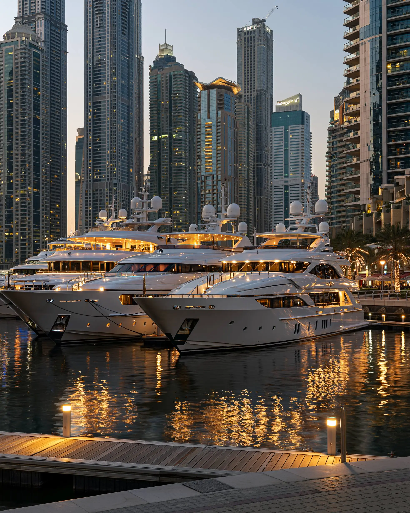

FINE DINING • CULINARY EXPERIENCES • DUBAI
Discover Dubai's most prestigious dining venues, celebrity chef restaurants and unforgettable culinary experiences.
Dubai has become one of the world's leading culinary destinations. International chefs, luxury hospitality brands and innovative dining concepts have transformed the city into a global center for fine dining.
The city's international population, tourism industry and luxury lifestyle sector have created strong demand for premium dining experiences.
Restaurants in Dubai often combine exceptional cuisine with architectural design, waterfront locations and world-class service.
Many of Dubai's finest restaurants can be found in:
• Downtown Dubai
• Palm Jumeirah
• Dubai Marina
• DIFC
• Jumeirah
• Bluewaters Island
Dubai hosts restaurants created by internationally recognized chefs, offering signature menus and unique dining concepts that attract visitors from around the world.
Palm Jumeirah, Dubai Marina and Jumeirah Beach offer exceptional waterfront dining experiences with views of the Arabian Gulf and Dubai skyline.
Many of Dubai's most celebrated restaurants are located within luxury hotels, combining premium hospitality with exceptional culinary experiences.
Hotels such as Atlantis, Burj Al Arab and Address properties continue to set high standards for fine dining.
Some of Dubai's most memorable dining experiences feature:
• Burj Khalifa views
• Dubai Fountain views
• Marina waterfront settings
• Palm Jumeirah beachfront locations
• Rooftop dining concepts
The most popular dining season runs between October and April when visitors can enjoy outdoor terraces, waterfront venues and rooftop restaurants in comfortable weather.
Dubai continues to strengthen its reputation as a world-class dining destination. Whether you're seeking waterfront elegance, celebrity chef creations or unforgettable skyline views, the city offers luxury dining experiences that rival the best in the world.